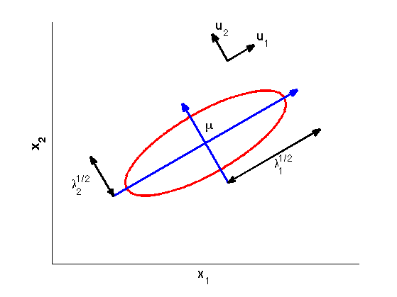

function gaussEvec
lambda1 = 9;
lambda2 = 1;
tx1 = 5;
tx2 = 4;
theta = 30 * pi / 180;
rot = [cos(theta), -sin(theta);
sin(theta), cos(theta)];
[x1, x2] = generate_ellipse(lambda1, lambda2);
v = rot * [x1; x2] + repmat([tx1;tx2], 1, size(x1,2));
y1 = [min(x1)-0.5, max(x1)+0.5;
0, 0];
y1 = rot * y1 + repmat([tx1; tx2], 1, 2);
y2 = [ 0, 0;
min(x2)-0.5, max(x2)+0.5];
y2 = rot * y2 + repmat([tx1; tx2], 1, 2);
lam1 = [ 0, max(x1)+0.5;
min(x2)-0.5, min(x2)-0.5];
lam1 = rot * lam1 + repmat([tx1;tx2], 1, 2);
lam2 = [min(x1)-0.5, min(x1)-0.5;
0, max(x2)+0.5];
lam2 = rot * lam2 + repmat([tx1;tx2], 1, 2);
u1 = [2, 3;
2, 2];
u1 = rot * u1 + repmat([tx1;tx2], 1, 2);
u2 = [2, 2;
2, 3];
u2 = rot * u2 + repmat([tx1;tx2], 1, 2);
figure(1); clf; hold on;
xlim([0,10]);
ylim([0,8]);
axis equal;
plot(v(1,:), v(2,:), 'r-', 'LineWidth', 3);
y1f = d2f(y1);
y2f = d2f(y2);
annotation('arrow', y1f(1,:), y1f(2,:), 'LineWidth', 3, 'Color', 'b');
annotation('arrow', y2f(1,:), y2f(2,:), 'LineWidth', 3, 'Color', 'b');
lam1f = d2f(lam1);
lam2f = d2f(lam2);
annotation('doublearrow', lam1f(1,:), lam1f(2,:), 'LineWidth', 3, 'Color', 'k');
annotation('doublearrow', lam2f(1,:), lam2f(2,:), 'LineWidth', 3, 'color', 'k');
u1f = d2f(u1);
u2f = d2f(u2);
annotation('arrow', u1f(1,:), u1f(2,:), 'LineWidth', 3, 'Color', 'k');
annotation('arrow', u2f(1,:), u2f(2,:), 'LineWidth', 3, 'Color', 'k');
text(tx1, tx2+0.6, '\mu', 'FontSize', 18);
text(u1(1,2)+0.1, u1(2,2)+0.1, 'u_1', 'FontSize', 18);
text(u2(1,2)+0.1, u2(2,2)+0.1, 'u_2', 'FontSize', 18);
text((lam1(1,1)+lam1(1,2))/2, (lam1(2,1)+lam1(2,2))/2-0.5, '\lambda_1^{1/2}', 'FontSize', 18);
text((lam2(1,1)+lam2(1,2))/2-1, (lam2(2,1)+lam2(2,2))/2-0.5, '\lambda_2^{1/2}', 'FontSize', 18);
set(gca, 'XTick', [], 'YTick', []);
xlabel('x_1', 'FontSize', 18, 'FontWeight', 'bold');
ylabel('x_2', 'FontSize', 18, 'FontWeight', 'bold');
hold off;
end
function [x1, x2] = generate_ellipse(lambda1, lambda2)
x1 = -sqrt(lambda1):0.05:sqrt(lambda1);
x2 = sqrt(1 - (x1.^2 / lambda1)) * sqrt(lambda2);
x1 = [x1, fliplr(x1)];
x2 = [x2, fliplr(-x2)];
end
function p1 = d2f(p2)
position = get(gca, 'Position');
xMinMax = xlim;
yMinMax = ylim;
p1(1,:) = position(3)*(p2(1,:) - xMinMax(1))/(xMinMax(2)-xMinMax(1))+position(1);
p1(2,:) = position(4)*(p2(2,:) - yMinMax(1))/(yMinMax(2)-yMinMax(1))+position(2);
end
